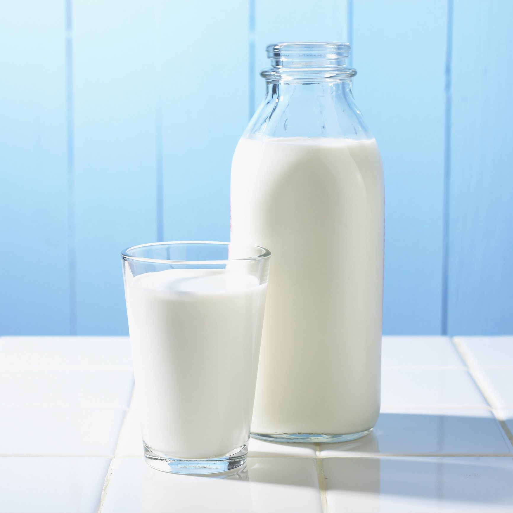
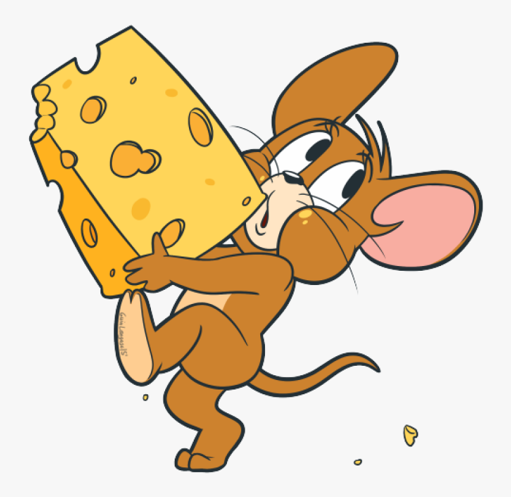
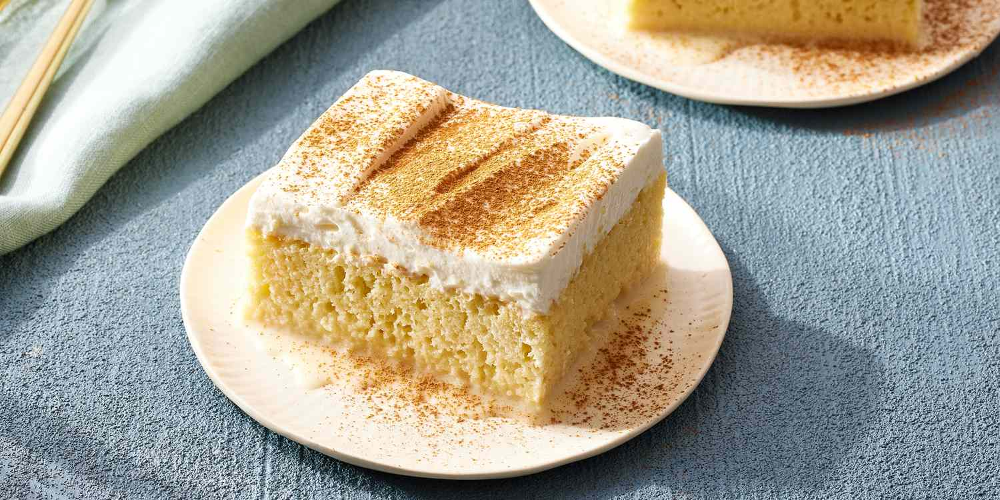

|

A glass of milk.
|
Milk is the greatest beverage ever created. Usually sourced from cows, milk can be created by any mammal, and milk from other animals is produced commonly around the world.
Milk was invented at the beginning of time by God. Despite this, it was kept from the cambiran-era creatures, as they were deemed unholy. It was, however, given to all mammals in the mesozoic era, as they were deemed cool enough.
Cow's milk is acquired by milking the cow, a process where you squeeze its udders to dispense the drink. It is then generally put through a process called "pasteurization", where it is treated by heat to remove bacteria and diseases. Finally, it is bottled, jarred, or sent to other facilities to make other banger items.
Milk has so many choices that it is nearly impossible to list them all. See the most common ones below:

Cheese is one of the best uses for milk. It's a great food and can be used on anything. Common uses include pizza, cheesecake, cartoon mousetrap, and french onion soup.

Milk is the primary ingredients in ice cream and a common flavor. Milk-flavored ice cream is sold commonly around the world, as while other flavors are great, it is redundant to build upon perfection.
Milk can be used in many baking applications. Cream cheese is often used for frostings and cakes, butter can be used for texture in many gods, and plain milk is often used as a liquid to make batters and even to dunk cookies in. New uses for milk in bakign are found every day, with current trends predicting 1,000,000,000 uses within the next 10 years.
{kind=link}